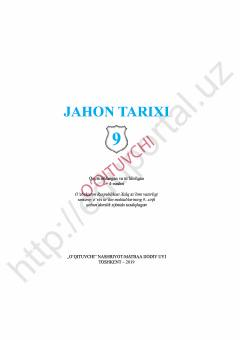

9J9-sinf o'quvchilari uchun jahon tarixi fanidan rasmiy darslik.
Ushbu darslik umumiy o'rta ta'lim maktablarining 9-sinfi uchun mo'ljallangan bo'lib, XIX asr oxiri va XX asr boshlaridagi jahon tarixi, kapitalizm taraqqiyoti va monopolistik jarayonlarni yoritadi. Unda davrning ijtimoiy-iqtisodiy va siyosiy manzarasi, shuningdek, xalqaro munosabatlar haqida batafsil ma'lumot beriladi.